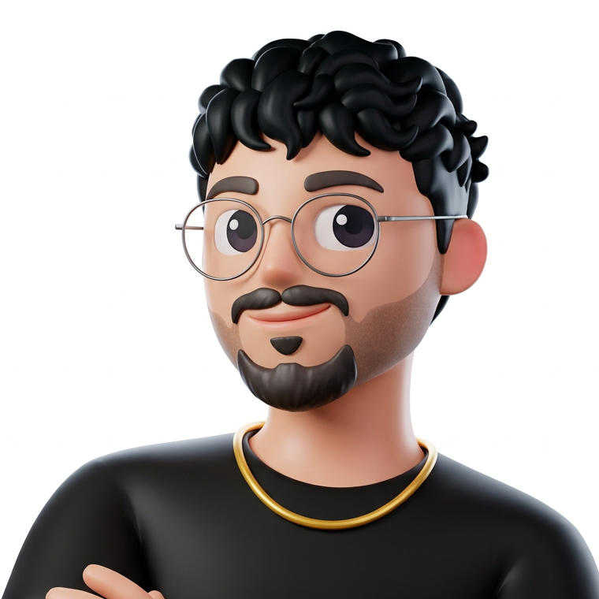
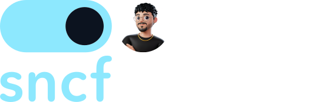
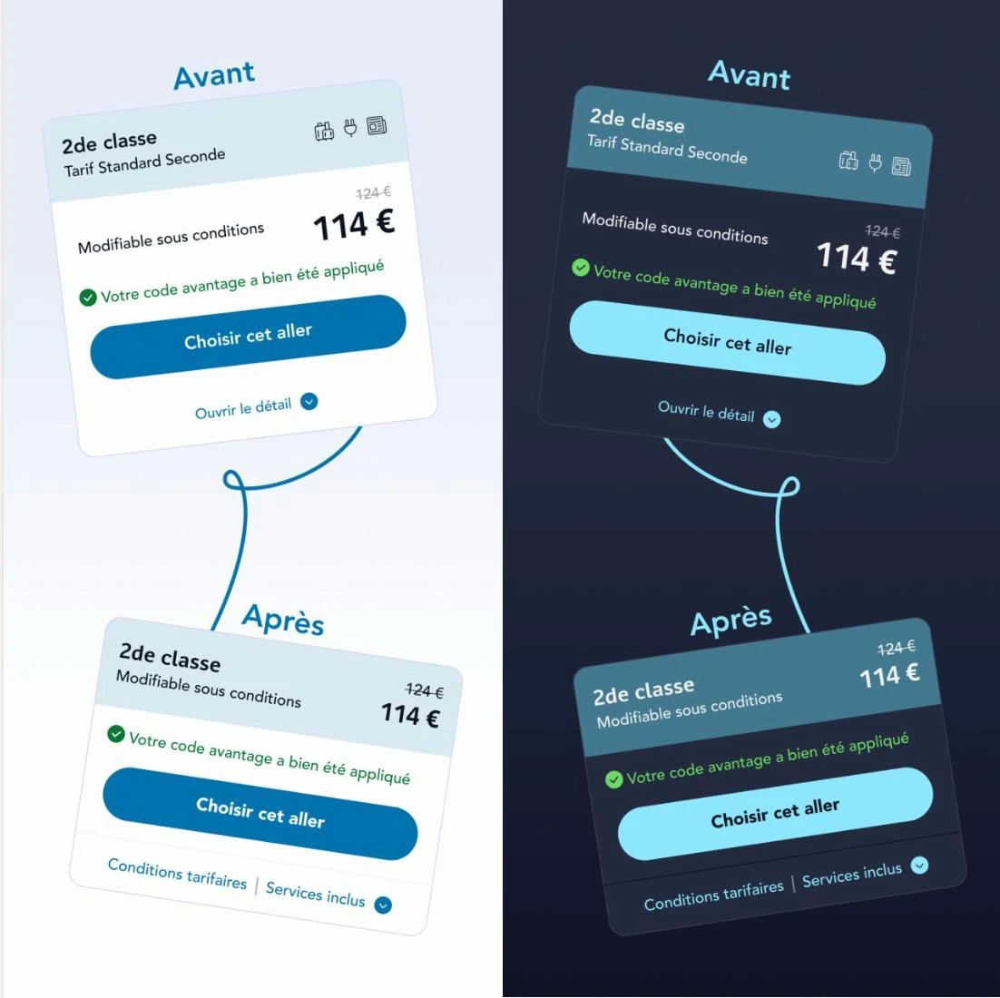
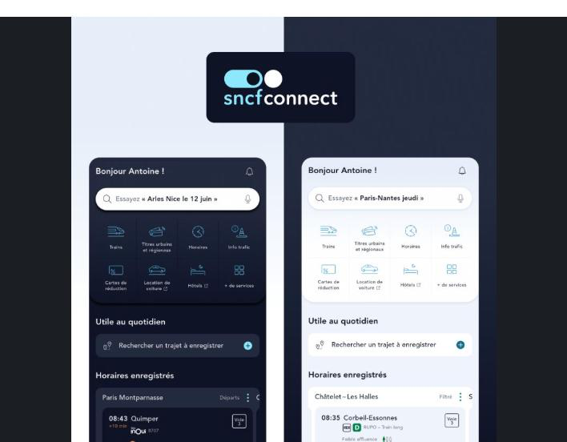
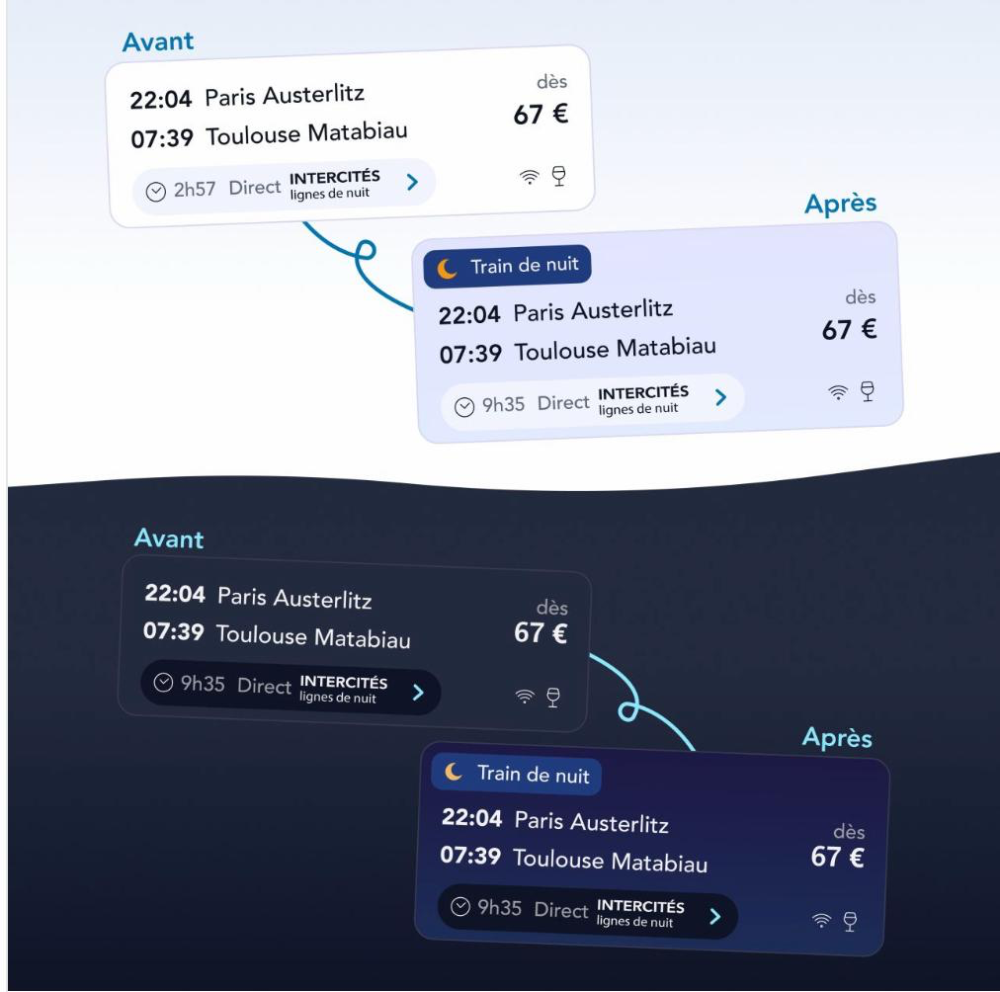

This page isn't public. Shared directly as part of an NTT DATA interview process.

Product case study · Anis Slimani

Case studyResults redesign
The disruption was already known. It just never reached the results page.
SNCF Connect writes clear, specific copy about engineering works and replacement coaches. On the results page (the screen where the booking decision actually happens), almost none of it survives. This is a redesign of that one flow, coded end to end rather than left in Figma, built for an interview with NTT DATA.
What follows is the process, not just the deliverable: where the idea came from, an unusually long discovery phase for a topic that looked simple at first glance, the decisions I made and the ones I deliberately didn't, where AI genuinely helped and where it didn't, and the prototype it shipped as.
This isn't the first time I've designed for transit.
Smartport was a seven-week team project during my studies: user story interviews, low-fidelity paper prototypes, and the freedom to design our own product with no existing app to imitate and no client constraints, just the problem of navigating an unfamiliar station and finding your way. It's where I first learned that journey planning hides a lot of smaller, harder problems underneath the obvious one, and it's the reason transit kept pulling me back since (see academic and art work ↗, see Smartport ↗).
The spark for this specific case study was much more recent. Using Citymapper to get to a friend's place, my usual route wasn't being suggested: the app kept recommending others instead. I didn't know why, and it was frustrating enough that I found myself thinking: what if I could just build my own route? It turned out the line had engineering works. That question, what if the traveller could see and shape their own trajet instead of being quietly rerouted around a problem nobody told them about, is what stuck with me.
I started sketching that idea for Brief to Ship, a personal series I'm building about turning a brief into something actually shipped. Two days later, this exact scenario landed as a real brief, from a different direction entirely: a redesign of SNCF Connect's disruption handling, built for an interview with NTT DATA. The idea I'd already started chasing for myself turned out to be the brief I was handed to solve for real.
The problem
Real information, wrong moment
The information exists. It just never reaches the moment of choice.
On SNCF Connect, planned engineering works and the replacement coaches they force are real, well-documented disruptions. The copy exists and it's specific. The problem is where it lives: past the results list, past the point where it could still change a decision. A traveller can book a journey, only discover the replacement coach once they open the details (or worse, on the day), and never get the chance to choose differently while it still mattered.
The primary case I designed for: Marc, 45, an occasional long-distance traveller going from Massy to Marseille. He isn't chasing the cheapest fare across every disruption type. He just wants to know, from the results list alone, which journeys are affected and how, without opening every single one to find out.
Discovery
Simple at first glance was the warning sign
Looking too easy was the first sign I was missing something.
At first read, the brief looked simple: show disruptions in the results. That simplicity made me nervous rather than comfortable: when something looks obvious this early, it's usually because I haven't found the harder problem underneath it yet. So instead of moving straight to screens, I spent longer than the topic seemed to warrant on discovery: mapping the existing flow end to end, reading how SNCF Connect currently communicates travaux in its own copy, and deliberately testing a few different discovery methodologies against each other instead of defaulting to the one I usually reach for.
I also asked a former colleague from Legalstart (someone whose research instincts I trust) what she reaches for when she has to get up to speed on a product she doesn't know well. Comparing her approach to my own turned out to be as useful as the discovery itself: it's easy to assume your default method is the right one until you watch someone else's.
FigJam carried most of that synthesis: screenshots, quotes and half-formed ideas on one board before any of it became a screen.
The redesign
One severity language, used everywhere
The fix isn't a new feature. It's a language.
One severity system (icon, label and colour, always together, never colour alone) carried consistently across every place a traveller makes a decision. Below are the actual pieces from the shipped prototype, not mockups.
Result card: severity on the card, the altered duration spelled out
Meilleur prix
07:28 Massy TGV
12:10 Marseille Saint-Charles
dès145 €
4h42 · 1 correspondance
4 h 42 au lieu de 3 h 52
Date strip: severity carried into the chip, before you even open a day
Ven 25101 €Travaux
Sam 2672 €Travaux
Dim 2792 €Travaux
Lun 28118 €
Filter: a choice offered, not a route silently taken away
"Masquer les trajets perturbés" ships as a real toggle, a switch with a state a screen reader announces, not automatic rerouting. The traveller decides; the product doesn't decide for them.
The detail drawer: the disruption marked from the time pill, through the rail, to the stop
Ce trajet en détail
07:28
Massy TGV
10:12
Avignon TGV
Correspondance, 18 min
10:30
Avignon TGV
Car de substitution : travaux sur la ligne entre Avignon et Marseille
12:10
Marseille Saint-Charles
The slides
A visual language borrowed, not invented
I didn't want to invent a presentation style from a blank page.
While researching the brand I came across an SNCF Connect design book, and its own way of showing before-and-after work stuck with me: two cards linked by a single curved line, and a day/night toggle used to hold both themes in one frame instead of two separate screenshots. That became the reference for how I built my own slides.



Deliberately dropped
What I chose not to build
A bigger banner
The works banner already exists on today's site. The problem was never that it's too quiet: it's that the information doesn't survive into the results list. Making it louder would have treated the symptom, not the cause.
Automatic rerouting
Quietly swapping a traveller's route around a disruption removes the exact agency this redesign is trying to protect. It's the same instinct that made Citymapper's silent substitution frustrating in the first place. The filter is offered as a choice instead: the traveller decides, the product doesn't decide for them.
A per-line traffic map
A network-wide map answers a different question ("what's happening on the network") than the one this brief was actually about: "is my journey, the one I'm about to book, affected."
Accessibility, not an afterthought
Severity never rests on colour alone
Severity is icon and text label and colour. Never colour on its own.
Each result card is an <article> whose accessible name states departure, arrival, the disruption if any, duration, then price, in that order, so the disruption is never the last thing a screen reader announces. The filter is a real checkbox with a state, not a styled div pretending to be one. The detail drawer is a focus-trapped dialog, reachable by keyboard, that names the affected leg explicitly rather than relying on colour in the rail alone.
Verified programmatically, not just eyeballed: every visible text node, its actual composited background through every ancestor, checked against the correct WCAG threshold for its size and weight, across every route, both themes, both breakpoints, drawers open and closed. Zero contrast failures.
What I tested
Five people, one comparison
Today's site, watched side by side with the redesign.
A small moderated usability test, five participants plus a pilot, mobile web, today's SNCF Connect against the redesign, same scenario each time.
0 / 5
knew their train was affected before opening it, on today's site
4 / 5
knew from the redesigned card alone, without opening anything
Five participants is directional, not statistically powered. But the gap wasn't subtle, and it landed exactly where the redesign was supposed to make a difference: at the moment of choice, not after it.
Where AI helped, and where it didn't
A brief to ship, honestly reported
Discovery
FigJam held the synthesis: screenshots, quotes and half-formed ideas in one place before any of it became a screen. Dovetail's built-in AI got a real trial for auto-tagging research notes. Verdict: not great. It needed enough manual correction that it wasn't a clear win over tagging by hand.
Design
Figma's agents got tested during the design pass, mostly for speed on repetitive component work rather than for decisions: the severity system, the drawer, what to drop, those stayed manual.
Build
The live prototype (Vite, React, TypeScript, every colour and spacing value mapped to a token, zero UI libraries) was built with Claude Code and its MCPs, screen by screen against the Figma spec. This case study page was too. This is the actual point of the exercise: not "AI wrote the code," but that the distance between a brief and something a reviewer can click through got a lot shorter, which is exactly the idea behind Brief to Ship, the series this project seeded.
Shipped, not just Figma
Proof it runs in a real browser
This isn't a Figma flow. It runs in a real browser.
One scripted scenario, played end to end: Massy TGV to Marseille Saint-Charles, a weekend of engineering works, a replacement coach between Avignon and Marseille, about fifty minutes added. Five screens (landing, autocomplete, passengers, results, and the mobile pre-departure alert), French UI throughout, because it's SNCF's product, not mine.
The payoff screen: the pre-departure alert, mobile only
10:24
samedi 26 septembre
SNCF CONNECT
Travaux sur votre trajet de demain
Travaux ajoutés sur votre trajet
Massy vers Marseille, samedi 26 septembre
Un car de substitution remplace le train entre Avignon et Marseille. Comptez environ 50 minutes de plus.